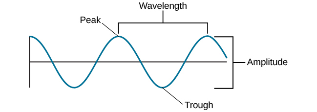

The Electromagnetic Spectrum: Waves of Energy
Introduction to Electromagnetic Waves
Electromagnetic radiation consists of waves that transfer energy without moving matter. Unlike water waves or sound waves that need a medium to travel through, electromagnetic waves can travel through empty space. These waves are created when charged particles move, and they can vary greatly in their properties and how they interact with matter.

Wave properties: Wavelength is the distance between wave peaks, while amplitude is the height of the wave from its resting position.
Key Wave Characteristics
Amplitude: The height of a wave from its resting point. Waves with larger amplitude transfer more energy.
Wavelength: The distance from one wave peak to the next peak. Measured in meters (m), nanometers (nm), or other length units.
Frequency: How many waves pass a point in one second, measured in Hertz (Hz). A frequency of 3 Hz means 3 waves pass a point every second.
These characteristics are related. When wavelength is shorter, frequency is higher (more waves pass per second). The energy of electromagnetic waves is directly related to their frequency - higher frequency waves carry more energy than lower frequency waves.

Higher frequency waves (top) have shorter wavelengths and carry more energy than lower frequency waves (bottom).
The Electromagnetic Spectrum Overview
The electromagnetic spectrum includes all possible wavelengths of electromagnetic radiation. While it's actually a continuous spectrum with no clear boundaries, scientists typically divide it into seven main sections based on wavelength and frequency:

The electromagnetic spectrum ranges from low-energy, long-wavelength radio waves to high-energy, short-wavelength gamma rays.
| Type |
Wavelength Range |
Energy Level |
Common Uses |
| Radio Waves |
1 mm - 100 km (longest) |
Lowest |
Radio, TV, WiFi, cell phones |
| Microwaves |
1 mm - 1 m |
Low |
Microwave ovens, radar, communications |
| Infrared |
750 nm - 1 mm |
Medium-low |
Thermal imaging, remote controls, heating |
| Visible Light |
400 - 700 nm |
Medium |
Human vision, photography, fiber optics |
| Ultraviolet |
10 - 400 nm |
Medium-high |
Sterilization, tanning beds, detecting forgeries |
| X-rays |
0.01 - 10 nm |
High |
Medical imaging, security scanners |
| Gamma Rays |
Less than 0.01 nm (shortest) |
Highest |
Cancer treatment, sterilization, astronomy |
Fun Fact!
All electromagnetic waves travel at the speed of light in a vacuum (approximately 300,000,000 meters per second). This includes radio waves, visible light, and gamma rays, despite their huge differences in wavelength and energy!
Radio Waves: The Long-Distance Travelers
Radio waves have the longest wavelengths in the electromagnetic spectrum, ranging from about 1 millimeter to 100 kilometers. Their low frequency gives them low energy compared to other electromagnetic waves, but they have unique properties that make them extremely useful.
Cellular towers use radio waves to transmit signals for mobile communication over long distances.
Properties of Radio Waves
- Penetration ability: Radio waves can pass through walls and buildings, allowing wireless communication inside structures.
- Long-distance travel: They can travel long distances without losing much energy.
- Diffraction: They can bend around corners and obstacles better than higher frequency waves.
Applications of Radio Waves
- AM and FM radio broadcasting
- Television signals
- WiFi networks
- Bluetooth connections
- Cell phone communications
- Radar systems
Why Radio Waves Pass Through Walls
Radio waves can pass through non-metallic materials like wood, plaster, and concrete because their long wavelength makes them less likely to interact with the atoms in these materials. However, they can be blocked by materials containing free electrons, like metals. This is why special "Faraday cages" made of metal mesh can block radio signals.
Microwaves: Cooking and Communication
Microwaves have wavelengths ranging from about 1 millimeter to 1 meter, placing them between radio waves and infrared radiation on the electromagnetic spectrum.
Properties of Microwaves
- Higher frequency and energy than radio waves
- Can penetrate clouds, light rain, and snow, but not solid objects
- Strongly absorbed by water molecules
How Microwave Ovens Work
Microwave ovens use electromagnetic waves with a specific frequency (usually 2.45 GHz) that causes water molecules in food to vibrate rapidly. The friction between these vibrating molecules generates heat, which cooks the food. This is why foods with high water content heat up quickly, while dry items like ceramics or plastics don't absorb much energy.
Applications of Microwaves
- Microwave ovens for cooking
- Satellite communications
- Radar systems for weather forecasting and speed detection
- Wireless networks (some WiFi bands use microwave frequencies)
- Cellular communications
Infrared Waves: Heat Signatures
Infrared waves have wavelengths between 750 nanometers and 1 millimeter, falling between visible light and microwaves on the spectrum. The word "infrared" means "below red," as these waves have longer wavelengths than red light (the longest wavelength of visible light).

Thermal imaging uses infrared detection to create a visual representation of temperature differences, showing warmer areas in brighter colors.
Properties of Infrared Waves
- All objects with a temperature above absolute zero emit infrared radiation
- The hotter an object, the more infrared energy it emits
- Strongly absorbed by water and most organic molecules
- Cannot penetrate very far through fog or clouds
Thermal Imaging
Thermal imaging cameras detect infrared radiation emitted by objects and convert this information into a visible image. Areas emitting more infrared energy (warmer objects) appear as brighter or different colors than cooler areas. This technology allows us to "see" heat patterns that are invisible to the naked eye, making it useful for:
- Finding people in smoke-filled buildings or darkness
- Detecting heat leaks in buildings
- Medical diagnoses (identifying inflammation)
- Night vision for military and security applications
Applications of Infrared Waves
- Remote controls for TVs and other devices
- Thermal imaging cameras
- Heating lamps and devices
- Astronomical observations
- Short-range wireless data transfer
Visible Light: The Colors We See
Visible light is the only part of the electromagnetic spectrum that human eyes can detect. It covers wavelengths from approximately 400 to 700 nanometers (0.0000004 to 0.0000007 meters).

Light interacts with matter in three primary ways: it can be reflected, transmitted (pass through), or absorbed by different materials.
The Visible Spectrum
What we perceive as white light is actually a combination of all wavelengths of visible light. When light passes through a prism, these wavelengths separate to form a rainbow of colors:
- Red: 620-750 nm (longest wavelength, lowest energy)
- Orange: 590-620 nm
- Yellow: 570-590 nm
- Green: 495-570 nm
- Blue: 450-495 nm
- Indigo: 425-450 nm
- Violet: 380-425 nm (shortest wavelength, highest energy)
Rainbows and Prisms
Both rainbows and prisms demonstrate how white light can be separated into its component colors. This happens because different wavelengths of light travel at different speeds through materials like water or glass, causing them to bend (refract) at different angles. This phenomenon is called dispersion.
In a rainbow, sunlight enters water droplets in the air, reflects off the back of the droplets, and exits at different angles based on wavelength, creating the colorful arc we see in the sky.
Fun Fact!
Some animals can see beyond the human visible spectrum. Bees and many birds can see into the ultraviolet range, while some snakes can detect infrared radiation, allowing them to "see" the heat signatures of their prey even in complete darkness!
Ultraviolet Light: Beyond Violet
Ultraviolet (UV) light has wavelengths shorter than visible light, ranging from about 10 to 400 nanometers. "Ultraviolet" means "beyond violet," as these waves have shorter wavelengths than violet light (the shortest wavelength of visible light).
Properties of UV Radiation
- Higher energy than visible light
- Can cause chemical reactions
- Can damage living cells and DNA
- Some materials fluoresce (glow) when exposed to UV light
Applications of UV Light
- Sterilization and disinfection (kills bacteria and viruses)
- Detecting counterfeit currency and documents
- Black lights for special effects
- Curing certain adhesives and coatings
- Medical treatments for skin conditions
UV and Sun Protection
The Sun produces all types of electromagnetic radiation, including ultraviolet light. Earth's atmosphere filters out most of the harmful UV radiation, but enough still reaches the surface to cause sunburn, skin aging, and even skin cancer with prolonged exposure. Sunscreen works by absorbing or reflecting UV radiation before it can damage skin cells. This is why using sunscreen with adequate SPF (Sun Protection Factor) is important for skin health.
X-Rays: Seeing Inside
X-rays have wavelengths ranging from about 0.01 to 10 nanometers, making them much shorter than ultraviolet light. They were discovered in 1895 by Wilhelm Röntgen, who named them "X-rays" because they were an unknown type of radiation at the time.

X-ray image showing the bones of human hands. The dense bone tissue absorbs X-rays while soft tissue allows them to pass through, creating the contrast in the image.
Properties of X-Rays
- High frequency and energy
- Can penetrate many materials that block visible light
- Different materials absorb X-rays to different degrees
- Can ionize atoms (knock electrons off atoms), making them potentially harmful to living tissue
Medical X-Ray Imaging
X-rays pass easily through soft tissues like skin and muscle but are absorbed by denser materials like bone. This differential absorption is what makes X-ray imaging possible:
- When X-rays pass through the body, bones absorb more radiation than surrounding tissues
- The X-rays that pass through hit a detector (traditionally film, now usually digital sensors)
- Areas where X-rays were absorbed (like bones) appear white on the final image
- Areas where X-rays passed through (like soft tissue) appear darker
This technology allows doctors to see bone fractures, dental cavities, pneumonia, and other conditions without surgery.
Applications of X-Rays
- Medical imaging (radiography, CT scans)
- Security screening at airports
- Inspecting welds and structural components
- Analyzing crystal structures
- Astronomy (observing high-energy objects in space)
Gamma Rays: The Highest Energy
Gamma rays have the shortest wavelengths (less than 0.01 nanometers) and highest frequencies of all electromagnetic waves. They are produced by the most energetic processes in the universe, including nuclear reactions and radioactive decay.
Properties of Gamma Rays
- Extremely high energy and frequency
- Extreme penetrating ability - can pass through most materials
- Strongly ionizing - can damage living cells and DNA
- Require thick shielding (like lead) to block
Applications of Gamma Rays
- Sterilizing medical equipment
- Cancer radiation therapy
- Food irradiation to kill bacteria and extend shelf life
- Industrial inspection of thick materials
- Astronomical observations of the most energetic events in the universe
Fun Fact!
Gamma-ray bursts are the most energetic explosions known in the universe. They can release more energy in a few seconds than our Sun will emit in its entire 10-billion-year lifetime! These bursts come from distant galaxies and are thought to be produced when massive stars collapse to form black holes.
Comparing Radio Waves and Gamma Rays
Radio waves and gamma rays represent the extreme opposite ends of the electromagnetic spectrum:
| Characteristic |
Radio Waves |
Gamma Rays |
| Wavelength |
Very long (1mm to 100km) |
Extremely short (less than 0.01nm) |
| Frequency |
Low |
Extremely high |
| Energy |
Lowest |
Highest |
| Penetration ability |
Can pass through walls but blocked by metal cages |
Can pass through most materials; requires thick lead to block |
| Health effects |
Generally considered safe at typical exposure levels |
Highly dangerous; can cause radiation sickness, cancer, and death |
| Detection |
Antennas, radio receivers |
Geiger counters, scintillation detectors |
| Common sources |
Transmitters, electronic devices |
Radioactive materials, nuclear reactions |
Why High-Frequency Waves Carry More Energy
The energy of an electromagnetic wave is directly proportional to its frequency. This means gamma rays with extremely high frequencies carry much more energy than low-frequency radio waves. This higher energy makes gamma rays more capable of ionizing atoms (removing electrons), which is why they're more dangerous to living tissues. It also explains why they can penetrate materials that block other types of radiation.
Digital vs. Analog Signals in Communication
Understanding Signal Types
Analog signals are continuous waveforms that vary smoothly over time, like natural sound waves.
Digital signals consist of discrete values (typically represented as 1s and 0s) that represent information in binary form.
Comparing Analog and Digital Signals
| Characteristic |
Analog Signals |
Digital Signals |
| Signal pattern |
Continuous, smooth waveform |
Discrete, step-like pattern (on/off) |
| Noise susceptibility |
Highly susceptible; noise adds to the signal |
More resistant; can distinguish between signal and noise |
| Signal degradation |
Degrades gradually with distance |
Can be regenerated perfectly at intervals |
| Information density |
Limited by noise levels |
Can be compressed and encrypted efficiently |
| Error detection |
Difficult to detect errors |
Can include error detection and correction codes |
| Examples |
Traditional radio, vinyl records |
Computer networks, CDs, DVDs, modern radio |
Why Digital Signals Are More Reliable
Digital signals have several advantages that make them more reliable for information transmission:
- Signal regeneration: Digital signals can be completely restored at various points in transmission, eliminating accumulated noise and distortion.
- Error correction: Digital signals can include extra bits that help detect and correct errors that occur during transmission.
- Binary simplicity: With only two states (1 or 0), receivers only need to distinguish between two levels, not infinite variations.
- Processing flexibility: Digital signals can be easily processed, stored, compressed, and encrypted using computers.
Digital Communication Technologies
Different parts of the electromagnetic spectrum are used for various digital communication technologies:
- Radio waves: WiFi, Bluetooth, cell phones, digital radio, television broadcasting
- Microwaves: Satellite communications, point-to-point wireless links, some WiFi bands
- Infrared: TV remote controls, short-range data transfer (like older laptops and PDAs)
- Visible light: Fiber optic networks, emerging Li-Fi technology (using LED lights for data transmission)
Electromagnetic Waves in Science and Technology
Medical Applications

A radiologist examines medical imaging scans produced using electromagnetic radiation such as X-rays or radio waves (MRI).
- Digital X-ray imaging: Modern X-ray systems capture images digitally rather than on film, allowing for immediate viewing, enhancement, storage, and sharing across medical networks.
- MRI (Magnetic Resonance Imaging): Uses radio waves and strong magnetic fields to create detailed images of internal body structures.
- Infrared thermography: Uses infrared waves to detect heat patterns that may indicate inflammation, infection, or circulatory problems.
- Gamma knife surgery: Uses precisely focused gamma rays to treat brain tumors without conventional surgery.
Astronomical Applications
Astronomers use specialized telescopes to observe the universe across the entire electromagnetic spectrum:
- Radio telescopes: Detect radio waves from distant cosmic objects
- Infrared telescopes: Can "see" through cosmic dust clouds to observe star formation
- Optical telescopes: Observe visible light from stars and galaxies
- Ultraviolet, X-ray, and gamma-ray telescopes: Must be placed in space (above Earth's atmosphere) to detect these high-energy waves from violent cosmic events
Environmental Monitoring
- Weather radar: Uses microwaves to track precipitation patterns
- Satellite imaging: Uses various wavelengths to monitor vegetation, ocean temperatures, atmospheric conditions, and human activity
- Thermal imaging: Uses infrared waves to detect heat signatures, useful for finding energy inefficiencies in buildings or tracking wildlife
Think About This: Electromagnetic Waves All Around Us
Take a moment to consider all the electromagnetic waves currently passing through the space around you:
- Radio waves carrying dozens of different radio stations
- Television broadcasts
- Cell phone signals
- WiFi networks
- Bluetooth connections
- Infrared radiation from warm objects
- Visible light that allows you to see
- Ultraviolet light from the sun (if it's daytime)
- Cosmic X-rays and gamma rays (mostly blocked by our atmosphere)
All of these different electromagnetic waves are simultaneously occupying the same space without interfering with each other because they have different frequencies!
Careers in Electromagnetic Science and Technology
Understanding the electromagnetic spectrum opens up many exciting career opportunities:
- Radiologist: A medical doctor specializing in interpreting X-rays, CT scans, MRIs, and other medical imaging techniques.
- Telecommunications Engineer: Designs and maintains systems that transmit information using radio waves, microwaves, and other electromagnetic signals.
- Astronomer: Studies objects and phenomena in space across all wavelengths of the electromagnetic spectrum.
- Remote Sensing Specialist: Uses satellite imagery and other electromagnetic data to study Earth's surface and atmosphere.
- Radio Frequency Engineer: Designs equipment and systems that transmit or receive radio waves.
- Laser Technician: Works with laser systems that generate intense, focused beams of visible light for medical, industrial, or research purposes.
- Medical Imaging Technologist: Operates equipment that creates images of the body's internal structures using various parts of the electromagnetic spectrum.
Check Your Understanding
- Compare radio waves and gamma rays in terms of wavelength, energy, and penetrating ability.
- What is the wavelength range of visible light? Which color has the longest wavelength, and which has the shortest?
- Explain why X-rays can pass through soft tissue but get absorbed by bones.
- Why can radio waves pass through walls while other electromagnetic waves like visible light cannot?
- How do microwaves in a microwave oven heat food? Why do they heat water-containing foods more effectively?
- Describe how thermal imaging cameras use infrared radiation to create visible images.
- How do prisms and rainbows demonstrate the separation of white light into the visible spectrum?
- Why do waves with higher frequencies carry more energy than those with lower frequencies?
- Compare digital and analog signals in terms of reliability when transmitting information over long distances.
- Explain how error detection and correction techniques make digital signals more reliable than analog signals.
- How has digitization improved scientific measurement tools like thermal imaging cameras and medical scanning equipment?
- Describe how WiFi technology uses electromagnetic waves to transmit digital information wirelessly.
Summary: The Incredible Electromagnetic Spectrum
From the longest radio waves to the shortest gamma rays, electromagnetic radiation forms an incredible spectrum that enables countless technologies and allows us to observe and interact with our world in remarkable ways.
Key points to remember:
- The electromagnetic spectrum is the complete range of electromagnetic waves arranged according to frequency and wavelength.
- All electromagnetic waves travel at the speed of light in a vacuum but differ in wavelength, frequency, and energy.
- Shorter wavelengths correspond to higher frequencies and higher energy levels.
- Different regions of the spectrum interact with matter differently, making them useful for various applications.
- Digital signals provide more reliable information transmission than analog signals across electromagnetic communication systems.
- Our modern world depends on the entire electromagnetic spectrum for communication, medicine, science, and countless other applications.
Understanding the electromagnetic spectrum helps us appreciate how interconnected our world is through these invisible waves of energy that surround us constantly.